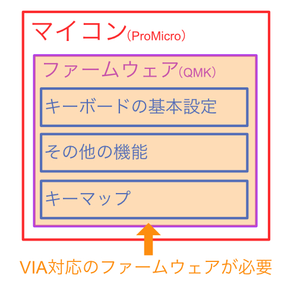
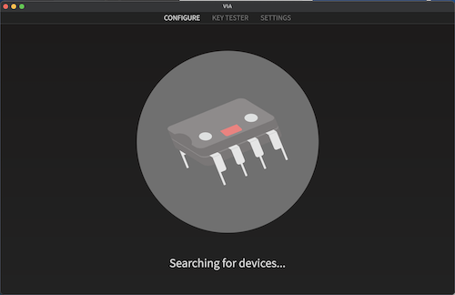
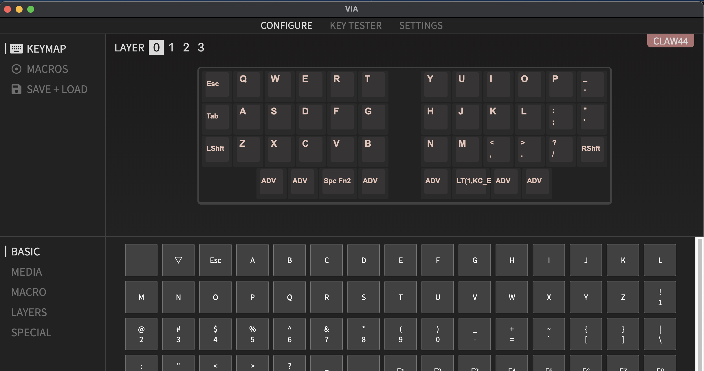
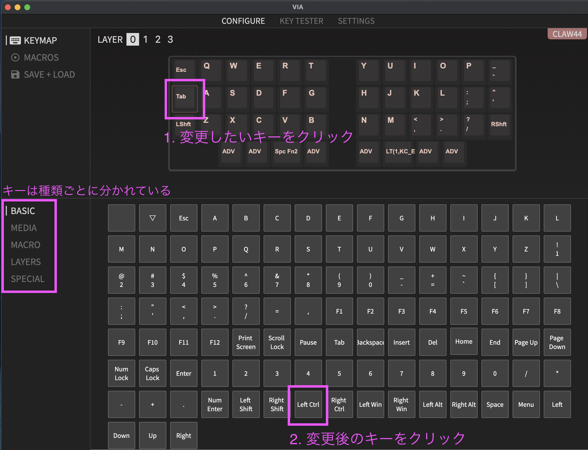
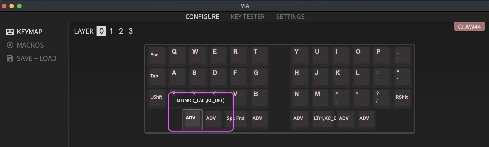

VIAでキーマップを変更する
VIAとは？
以前はキーマップを変えるだけでもファームウェアを自分で作成し、書き込む必要がありました。
このアプリを使うと画面上から設定するだけで、リアルタイムにキーマップを書き換えることができます。
ファームウェアの確認
- 一つだけ準備が必要で、VIAに対応したファームウェアがProMicroに書き込まれている必要があります。
- ↓こちらを参考にファームウェアを書き込んでください

※2021/2/12以降BOOTHで発送したものはVIA対応のファームウェアを書き込んであります。遊舎工房も次回納品分より対応します。
※OLEDを使う場合は、OLED用のファームウェアを書き込んでください
VIAをインストールする
- VIAの最新バージョンをダウンロードしてインストールする
- お使いのOSにあったものをダウンロードしてください。一般的に下記のような感じだと思います。
- Windowsならvia-X.Y.Z-win.exe or via-X.Y.Z-win.msi
- Macならvia-X.Y.Z-mac.dmg
- お使いのOSにあったものをダウンロードしてください。一般的に下記のような感じだと思います。
- こんな画面が出ていればOKです

キーボードを接続する
-
VIA対応のファームウェアの書き込まれたキーボードを接続するとキーマップ編集画面が表示されます。
-
このような画面が表示されればOKです 
-
表示されない場合はVIA対応のファームウェアが書き込まれていない可能性があります
- QMK Toolboxでファームウェアを書き込む を行ってください
キーマップを変更する
-
下記の手順でキーを変更できます。シンプルなキーは大体これだけで変更ができます。 
-
複雑な機能を使うにはAnyキーを使用する必要があります
- 例えばClaw44のデフォルトのキーマップの一番下の段はAnyキーで指定されていて、ADVなどと表示されています
- カーソルを合わせると何が設定されているのかが表示されます 
- 一番左下のキーは
MT(MOD_LALT,KC_DEL)と設定されているのが確認できます - これは短く押した時はDELETEキーが入力され、長く押すとALTキーが入力される、という意味になります
-
キーマップの変更については、VIAでClaw44でキーマップの構築してみるを参考にしてみてください。
-
また、サリチル酸さんがとても丁寧にまとめてくださっているので、↓がとても参考にります。
-
大元のQMKの機能については公式ドキュメントの修飾キー辺りを読んでみると参考になると思います
-
色々と試してみて自分に合うキーマップを探求してみてください！
-
VIAに慣れてきたら、→ファームウェアを変更するも読んでみてください
Last modified January 1, 0001